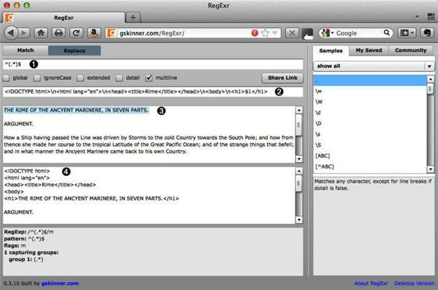

3.5 添加标签
在RegExr中，取消勾选global但勾选multiline，点击Replace标签，然后在第一个文本框（在图3-4中标号为1）中输入：
^(.*)$
这会匹配第一行文本并将其捕捉。然后在下一个文本框（标号为2）中输入以下内容：
<!DOCTYPE html>\n<html lang="en">\n<head><title>Rime</title></head>\n<body>\n
<h1>$1</h1>
输入替换文本的时候，你会注意（标号为3的文本框中的）主题词文本在显示结果的文本框（标号为4）中变了，包含了你刚刚添加的标记（参见图3-4）。

图3-4 用RegExr添加标记
RegExr很好地展示了添加标记的一种方式，但它也有自己的局限性，比如说它不能将结果保存为文件。因此，我们不能把目光仅局限于浏览器。
3.5.1 使用sed添加标签
第2章我们已经看到了，在RegExr中能完成的工作，完全可以使用sed在命令行环境下做到。sed中的插入命令（i）允许你在文件或字符串中的某个位置之前插入文本。而与i命令相反的是命令a，它在某个位置之后添加文本（后面会用到a）。
以下命令从第1行开始插入HTML5的doctype（文档类型）和其他标记：
sed '1 i\
<!DOCTYPE html>\
<html lang=\"en\">\
<head>\
<title>Rime</title>\
</head>\
<body>
s/^/<h1>/
s/$/<\/h1>/
q' rime.txt
行尾的反斜杠（\）允许你在该流中插入新行而不会提前执行命令。引号前的反斜杠将引号转义为字面值。
正确运行这个sed命令会得到如下输出：
<!DOCTYPE html>
<html lang="en">
<head>
<title>The Rime of the Ancyent Mariner (1798)</title>
</head>
<body>
<h1>THE RIME OF THE ANCYENT MARINERE, IN SEVEN PARTS.</h1>
以上sed命令保存在实例代码库中的top.sed文件中。用以下命令运行这些代码：
sed -f top.sed rime.txt
可以得到与前面的命令相同的输出。要将输出保存到文件，则可以把输出重定位到一个文件中，比如：
sed -f top.sed rime.txt > temp
除了会在屏幕上显示结果，重定位的那部分（>temp）还会将输出保存到文件temp中。
3.5.2 使用Perl添加标签
下面尝试用Perl完成同样的工作。先不解释，试一试这个：
perl -ne 'print "<!DOCTYPE html>\
<html lang=\"en\">\
<head><title>Rime</title></head>\
<body>\
" if $. == 1;
s/^/<h1>;s$/<\/h1>/m;print;exit;' rime.txt
与之前的sed命令比较一下。有哪些地方相似，哪些地方不同？sed命令稍微简单一些，但笔者认为Perl的功能强大很多。
以下是该命令的工作过程。
以上命令要键入很多内容。我将这些Perl代码放入名为top.pl的文件中，也可以在代码库中找到。
#!/usr/bin/perl -n
if ($ == 1) {
print "<!DOCTYPE html>\
<html lang=\"en\">\
<head>\
<title>The Rime of the Ancyent Mariner (1798)</title>\
</head>\
<body>\
";
s/^/<h1>/;
s/$/<\/h1>/m;
print;
exit;
}
使用合集运行这个文件：
perl top.pl rime.txt
得到的结果与前面是一样的，只是形式上稍有不同。（就像在sed中一样，你可以用>将输出重定位到文件中。）
下一章会涉及选择、分组和后向引用，还有其他一些概念。第4章见！